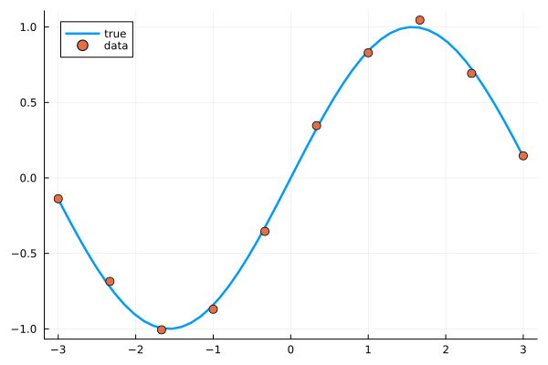
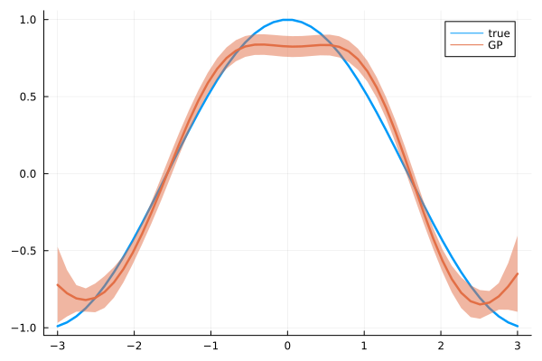

Derivative of a GP

You are seeing the HTML output generated by Documenter.jl and Literate.jl from the Julia source file. The corresponding notebook can be viewed in nbviewer.
The derivative of a GP is also a GP, as differentiation is a linear operators. In this example, we show how to use of the DerivativeGP and how to easily generate it from a known GP.
Setup
using GPDiffEq
using PlotsThe toy model
We generate data for our model
σ_n = 3e-2
x = collect(range(-3, 3; length=10))
y = sin.(x) + σ_n * randn(length(x))10-element Vector{Float64}:
-0.13794892890990554
-0.6854582832475714
-1.0061274929761141
-0.8698642733853623
-0.35425941243021264
0.34653271853345896
0.8291483508130271
1.0458078532049033
0.6924381440180076
0.14654808350799742which looks as follows
x_plot = collect(range(-3, 3; length=50))
plot(x_plot, sin.(x_plot); label="true", linewidth=2.5)
scatter!(x, y; label="data", markersize=5)
# Define a GP
We'll use a simple GP with a ZeroMean and GaussianKernel, condition it on our data
kernel = GaussianKernel()
f = GP(kernel)
fx = f(x, σ_n^2)
f_post = posterior(fx, y)AbstractGPs.PosteriorGP{AbstractGPs.GP{AbstractGPs.ZeroMean{Float64}, KernelFunctions.SqExponentialKernel{Distances.Euclidean}}, NamedTuple{(:α, :C, :x, :δ), Tuple{Vector{Float64}, LinearAlgebra.Cholesky{Float64, Matrix{Float64}}, Vector{Float64}, Vector{Float64}}}}(AbstractGPs.GP{AbstractGPs.ZeroMean{Float64}, KernelFunctions.SqExponentialKernel{Distances.Euclidean}}(AbstractGPs.ZeroMean{Float64}(), Squared Exponential Kernel (metric = Distances.Euclidean(0.0))), (α = [0.37819284925514607, 0.5311020801878809, -3.60863267159038, 5.579803225726668, -8.767769163660187, 10.398633541711558, -9.658672759336008, 8.115734064535015, -3.59242369738981, 0.7282104080886844], C = LinearAlgebra.Cholesky{Float64, Matrix{Float64}}([1.0004498987955368 0.8003773141272065 0.4109274147582345 0.13527442343644172 0.028552654979465738 0.0038641816488032754 0.0003353117715403665 1.8656075767503327e-5 6.655367228157499e-7 1.5223130876467006e-8; 0.8007374029168073 0.6002467451228027 0.7860774360298166 0.5045287013510821 0.18739357913541801 0.042437043869301076 0.005993442252878988 0.0005339982776949294 3.0207225222272073e-5 1.0889719997540142e-6; 0.4111122905071873 0.800737402916808 0.4627320221952479 0.7532454836302187 0.5447501912681774 0.21694755843305388 0.05125299553180774 0.0074308448185643515 0.0006730546137433022 3.8471936975043666e-5; 0.1353352832366127 0.4111122905071873 0.800737402916808 0.4008401941766902 0.7284671118734966 0.5632271754070077 0.23365913510519642 0.05662183999427727 0.008341514642992735 0.0007632276968352209; 0.028565500784550377 0.13533528323661262 0.41111229050718734 0.8007374029168081 0.3708790752043206 0.7123614154783097 0.5712010291281239 0.242503787177178 0.059633063470279454 0.008867504227890321; 0.0038659201394728076 0.028565500784550366 0.1353352832366127 0.41111229050718745 0.8007374029168081 0.3568392984503521 0.7029993719303738 0.5740291337269634 0.24663628796656215 0.06112098575317586; 0.00033546262790251185 0.003865920139472804 0.028565500784550366 0.1353352832366127 0.41111229050718745 0.8007374029168081 0.3509441161144569 0.6982952225737459 0.5746810106111326 0.24824985985472933; 1.866446911352057e-5 0.00033546262790251185 0.003865920139472804 0.028565500784550366 0.1353352832366127 0.41111229050718734 0.800737402916808 0.3488620260888474 0.6963366393076491 0.5746726576516153; 6.658361469857302e-7 1.8664469113520537e-5 0.00033546262790251185 0.003865920139472804 0.028565500784550366 0.13533528323661262 0.4111122905071873 0.800737402916808 0.3482835414112316 0.6956902200185071; 1.522997974471263e-8 6.658361469857302e-7 1.866446911352057e-5 0.00033546262790251185 0.0038659201394728076 0.028565500784550377 0.1353352832366127 0.4111122905071873 0.8007374029168073 0.3481716098016506], 'U', 0), x = [-3.0, -2.3333333333333335, -1.6666666666666667, -1.0, -0.3333333333333333, 0.3333333333333333, 1.0, 1.6666666666666667, 2.3333333333333335, 3.0], δ = [-0.13794892890990554, -0.6854582832475714, -1.0061274929761141, -0.8698642733853623, -0.35425941243021264, 0.34653271853345896, 0.8291483508130271, 1.0458078532049033, 0.6924381440180076, 0.14654808350799742]))and plot the posterior. Note that this GP completely untrained, no hyperparameters have been defined.
plot(x_plot, sin.(x_plot); label="true", linewidth=2.5)
scatter!(x, y; label="data", markersize=5)
plot!(
x_plot,
mean(f_post, x_plot);
ribbons=sqrt.(var(f_post, x_plot)),
label="GP",
linewidth=2.5,
)
Derivative of a GP
Now we can very easily generate the derivate of this GP
df_post = differentiate(f_post)AbstractGPs.PosteriorGP{GPDiffEq.DerivativeGP{AbstractGPs.GP{AbstractGPs.ZeroMean{Float64}, KernelFunctions.SqExponentialKernel{Distances.Euclidean}}, AbstractGPs.ZeroMean{Float64}, GPDiffEq.DerivativeKernelCollection{KernelFunctions.SqExponentialKernel{Distances.Euclidean}, GPDiffEq.FirstComponentDerivativeKernel{GPDiffEq.var"#d10#12"{KernelFunctions.SqExponentialKernel{Distances.Euclidean}}, KernelFunctions.SqExponentialKernel{Distances.Euclidean}}, GPDiffEq.SecondComponentDerivativeKernel{GPDiffEq.var"#d01#15"{KernelFunctions.SqExponentialKernel{Distances.Euclidean}}, KernelFunctions.SqExponentialKernel{Distances.Euclidean}}, GPDiffEq.BothComponentDerivativeKernel{GPDiffEq.var"#d11#18"{KernelFunctions.SqExponentialKernel{Distances.Euclidean}}, KernelFunctions.SqExponentialKernel{Distances.Euclidean}}}}, NamedTuple{(:α, :C, :x, :δ), Tuple{Vector{Float64}, LinearAlgebra.Cholesky{Float64, Matrix{Float64}}, Vector{Float64}, Vector{Float64}}}}(GPDiffEq.DerivativeGP{AbstractGPs.GP{AbstractGPs.ZeroMean{Float64}, KernelFunctions.SqExponentialKernel{Distances.Euclidean}}, AbstractGPs.ZeroMean{Float64}, GPDiffEq.DerivativeKernelCollection{KernelFunctions.SqExponentialKernel{Distances.Euclidean}, GPDiffEq.FirstComponentDerivativeKernel{GPDiffEq.var"#d10#12"{KernelFunctions.SqExponentialKernel{Distances.Euclidean}}, KernelFunctions.SqExponentialKernel{Distances.Euclidean}}, GPDiffEq.SecondComponentDerivativeKernel{GPDiffEq.var"#d01#15"{KernelFunctions.SqExponentialKernel{Distances.Euclidean}}, KernelFunctions.SqExponentialKernel{Distances.Euclidean}}, GPDiffEq.BothComponentDerivativeKernel{GPDiffEq.var"#d11#18"{KernelFunctions.SqExponentialKernel{Distances.Euclidean}}, KernelFunctions.SqExponentialKernel{Distances.Euclidean}}}}(AbstractGPs.GP{AbstractGPs.ZeroMean{Float64}, KernelFunctions.SqExponentialKernel{Distances.Euclidean}}(AbstractGPs.ZeroMean{Float64}(), Squared Exponential Kernel (metric = Distances.Euclidean(0.0))), AbstractGPs.ZeroMean{Float64}(), GPDiffEq.DerivativeKernelCollection{KernelFunctions.SqExponentialKernel{Distances.Euclidean}, GPDiffEq.FirstComponentDerivativeKernel{GPDiffEq.var"#d10#12"{KernelFunctions.SqExponentialKernel{Distances.Euclidean}}, KernelFunctions.SqExponentialKernel{Distances.Euclidean}}, GPDiffEq.SecondComponentDerivativeKernel{GPDiffEq.var"#d01#15"{KernelFunctions.SqExponentialKernel{Distances.Euclidean}}, KernelFunctions.SqExponentialKernel{Distances.Euclidean}}, GPDiffEq.BothComponentDerivativeKernel{GPDiffEq.var"#d11#18"{KernelFunctions.SqExponentialKernel{Distances.Euclidean}}, KernelFunctions.SqExponentialKernel{Distances.Euclidean}}}(GPDiffEq.FirstComponentDerivativeKernel{GPDiffEq.var"#d10#12"{KernelFunctions.SqExponentialKernel{Distances.Euclidean}}, KernelFunctions.SqExponentialKernel{Distances.Euclidean}}(GPDiffEq.var"#d10#12"{KernelFunctions.SqExponentialKernel{Distances.Euclidean}}(Squared Exponential Kernel (metric = Distances.Euclidean(0.0)))), GPDiffEq.SecondComponentDerivativeKernel{GPDiffEq.var"#d01#15"{KernelFunctions.SqExponentialKernel{Distances.Euclidean}}, KernelFunctions.SqExponentialKernel{Distances.Euclidean}}(GPDiffEq.var"#d01#15"{KernelFunctions.SqExponentialKernel{Distances.Euclidean}}(Squared Exponential Kernel (metric = Distances.Euclidean(0.0)))), GPDiffEq.BothComponentDerivativeKernel{GPDiffEq.var"#d11#18"{KernelFunctions.SqExponentialKernel{Distances.Euclidean}}, KernelFunctions.SqExponentialKernel{Distances.Euclidean}}(GPDiffEq.var"#d11#18"{KernelFunctions.SqExponentialKernel{Distances.Euclidean}}(Squared Exponential Kernel (metric = Distances.Euclidean(0.0)))))), (α = [0.37819284925514607, 0.5311020801878809, -3.60863267159038, 5.579803225726668, -8.767769163660187, 10.398633541711558, -9.658672759336008, 8.115734064535015, -3.59242369738981, 0.7282104080886844], C = LinearAlgebra.Cholesky{Float64, Matrix{Float64}}([1.0004498987955368 0.8003773141272065 0.4109274147582345 0.13527442343644172 0.028552654979465738 0.0038641816488032754 0.0003353117715403665 1.8656075767503327e-5 6.655367228157499e-7 1.5223130876467006e-8; 0.8007374029168073 0.6002467451228027 0.7860774360298166 0.5045287013510821 0.18739357913541801 0.042437043869301076 0.005993442252878988 0.0005339982776949294 3.0207225222272073e-5 1.0889719997540142e-6; 0.4111122905071873 0.800737402916808 0.4627320221952479 0.7532454836302187 0.5447501912681774 0.21694755843305388 0.05125299553180774 0.0074308448185643515 0.0006730546137433022 3.8471936975043666e-5; 0.1353352832366127 0.4111122905071873 0.800737402916808 0.4008401941766902 0.7284671118734966 0.5632271754070077 0.23365913510519642 0.05662183999427727 0.008341514642992735 0.0007632276968352209; 0.028565500784550377 0.13533528323661262 0.41111229050718734 0.8007374029168081 0.3708790752043206 0.7123614154783097 0.5712010291281239 0.242503787177178 0.059633063470279454 0.008867504227890321; 0.0038659201394728076 0.028565500784550366 0.1353352832366127 0.41111229050718745 0.8007374029168081 0.3568392984503521 0.7029993719303738 0.5740291337269634 0.24663628796656215 0.06112098575317586; 0.00033546262790251185 0.003865920139472804 0.028565500784550366 0.1353352832366127 0.41111229050718745 0.8007374029168081 0.3509441161144569 0.6982952225737459 0.5746810106111326 0.24824985985472933; 1.866446911352057e-5 0.00033546262790251185 0.003865920139472804 0.028565500784550366 0.1353352832366127 0.41111229050718734 0.800737402916808 0.3488620260888474 0.6963366393076491 0.5746726576516153; 6.658361469857302e-7 1.8664469113520537e-5 0.00033546262790251185 0.003865920139472804 0.028565500784550366 0.13533528323661262 0.4111122905071873 0.800737402916808 0.3482835414112316 0.6956902200185071; 1.522997974471263e-8 6.658361469857302e-7 1.866446911352057e-5 0.00033546262790251185 0.0038659201394728076 0.028565500784550377 0.1353352832366127 0.4111122905071873 0.8007374029168073 0.3481716098016506], 'U', 0), x = [-3.0, -2.3333333333333335, -1.6666666666666667, -1.0, -0.3333333333333333, 0.3333333333333333, 1.0, 1.6666666666666667, 2.3333333333333335, 3.0], δ = [-0.13794892890990554, -0.6854582832475714, -1.0061274929761141, -0.8698642733853623, -0.35425941243021264, 0.34653271853345896, 0.8291483508130271, 1.0458078532049033, 0.6924381440180076, 0.14654808350799742]))and plot the new posterior. As we know, the derivative of sin is cos, so we can check the differentiated GP.
plot(x_plot, cos.(x_plot); label="true", linewidth=2.5)
plot!(
x_plot,
mean(df_post, x_plot);
ribbons=sqrt.(var(df_post, x_plot)),
label="GP",
linewidth=2.5,
)
As we saw above, the original GP was slighly off from the true function. This is reflected and amplified in the derivative as well.
This page was generated using Literate.jl.